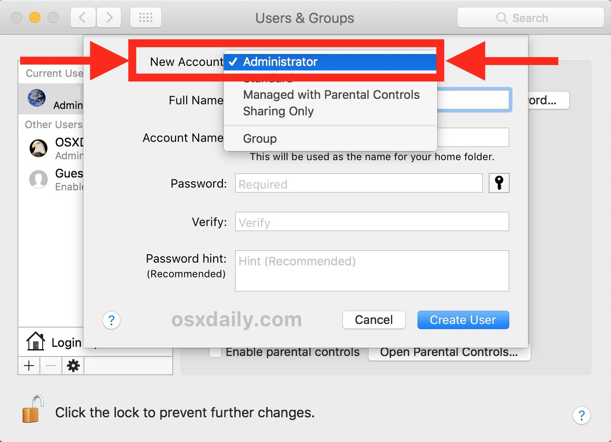

1. Is this issue reproducible?
Can the issue provided by the user occur multiple times, or was it a single occurence error. This can be simply tested by restarting the device. This can also be more complicated by repeating the steps that the user did before the issue.

2. Does it still occur using an Admin account?
If the error is reproducible, trying using another account or an admin account to test if the issue is user specfic.
3. Try rebooting using Safe mode
Testing in safe mode is a great way to see if the error occurs during start up or not. Safe mode allows the system to carefully boot without many applications running. This is a great way to see if the issue is specfic to an application or if it is apart of the system.